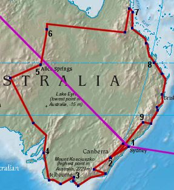

Caroline and Helen's Round-the-World Trip
World Map Page
Australia

Starting in Sydney [1], we headed down to Canberra [2] after New Year, then into the Snowy
Mountains before heading back to the east coast and Eden. Down to the most southern point in Australia,
Wilson's Promontory, then up via Phillip Island to Melbourne [3].
We then headed out along the Great Ocean Road, down to Apollo Bay, west to Penola and Naracorte, and then north to Adelaide. Then the rural part of the trip, north through Coober Pedy, to Uluru and Alice Springs [5].
Carrying on north we got to Tennant Creek [6], and decided against going to Darwin, so headed east through Charter's Towers, Daintree and Port Douglas to Cairns [7].
After a few day's layover for diving, we headed down the East Coast, through Townsville, climbing Mount Rooper, viewing platypus in Eungella National Park and then back to civilization in Rockhampton [8]. Then via Koorana Crocodile Farm to Bundaberg.
Coming back down the coast, we visited Fraser Island, Brisbane, Surfer's Paradise (very tacky!), Byron Bay (60's throwback) and Port Macquarie.
Back around Sydney, the Hunter Valley [9] (famous wine region) had to be visited, before heading back to Canberra to catch up with people again. Coming back into Sydney we passed through the Blue Mountains, then headed back into the city proper.
We then headed out along the Great Ocean Road, down to Apollo Bay, west to Penola and Naracorte, and then north to Adelaide. Then the rural part of the trip, north through Coober Pedy, to Uluru and Alice Springs [5].
Carrying on north we got to Tennant Creek [6], and decided against going to Darwin, so headed east through Charter's Towers, Daintree and Port Douglas to Cairns [7].
After a few day's layover for diving, we headed down the East Coast, through Townsville, climbing Mount Rooper, viewing platypus in Eungella National Park and then back to civilization in Rockhampton [8]. Then via Koorana Crocodile Farm to Bundaberg.
Coming back down the coast, we visited Fraser Island, Brisbane, Surfer's Paradise (very tacky!), Byron Bay (60's throwback) and Port Macquarie.
Back around Sydney, the Hunter Valley [9] (famous wine region) had to be visited, before heading back to Canberra to catch up with people again. Coming back into Sydney we passed through the Blue Mountains, then headed back into the city proper.